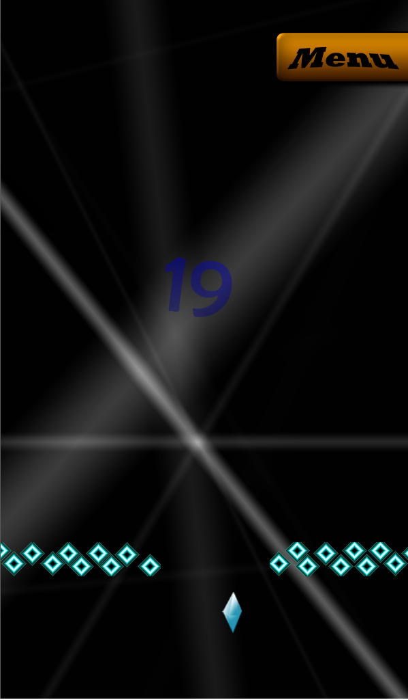
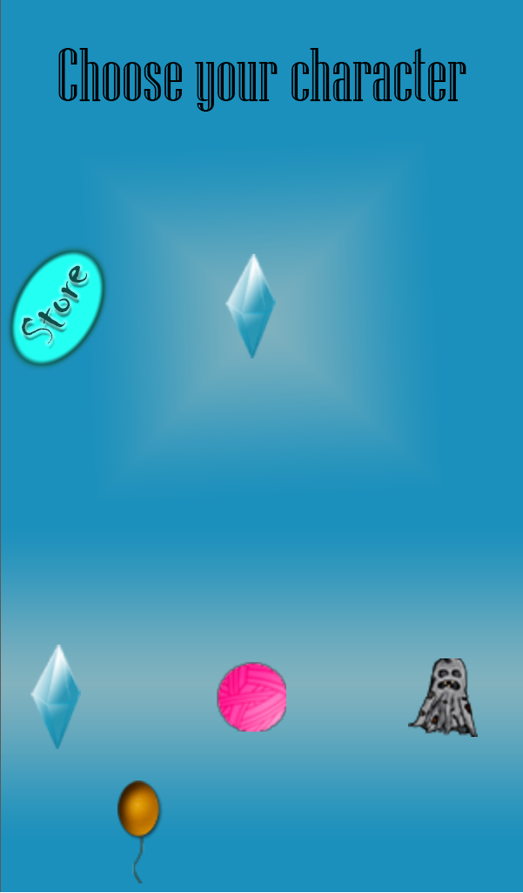
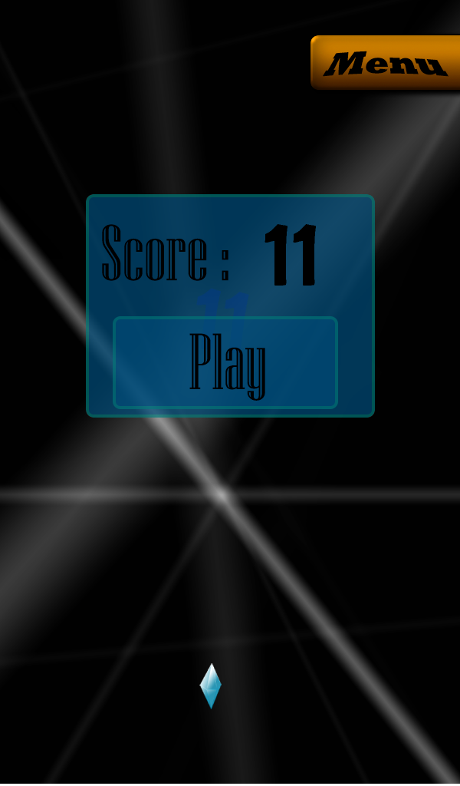

|
A "Where to Go?"
nevű játék egy 2 hét alatt 1 ember által készített androidos játék amit jómagam fejlesztettem,
a Gamemaker Stúdióban ami egy kezdő/hobbi játékfejlesztők által kedvelt fejlesztői környezet.
A Gamemaker Stúdió lehetővé teszi a kódolni nem tudó embereknek, hogy beletekintsenek sőt ki is próbálják a játékfejlesztést méghozzá azzal, hogy van egy drag-and-drop funkciója, mellyel kódolás nélkül lehet "kódolni". Ezen kívül ahogy az ember egyre bonyolultabb dolgokat szeretne megvalósítani, egyre többször kell kisebb kódrészletekhez nyúlnia, és ezzel szépen lassan akár hozzá is lehet szokni a kódírás logikájához. Én is autodidakta módon kezdtem tanulni ezt a fejlesztői környezetet 2016-ban és ez szerettette meg velem a kódolást, és segített megbizonyosodni abban, hogy engem igenis érdekel a komolyabb szintű programozás. |
A játék maga nagyon egyszerű, 2 dimenziós térben van, és a játékban egy kis figurát irányítunk ami lehet
egy kristálytól kezdve, szellemen át akár egy gombolyag is, és a választott karakterünkkel kell kikerülni a
leeső objektumokat.
De ez nem olyan egyszerű mint mi azt képzeljük, a karakterünk a képernyő alján van és csak jobbra és balra képes mozogni, viszont mindig mozgásban van.Ha hozzáérünk a kijelzőhöz, akkor irány változtat és ha kimegy valamelyik oldalra akkor a másikon visszajön.Mindeközben kell a fentről lefelé mozgó dolgokat kikerülni oly módon, hogy azok egyre gyakrabban és gyorsabban jönnek. A játék maga tényleg egyszerű és semmi újítást nem hozott be, sőt még csak nem is ismert.De ez az első komolyabbnak mondható programozási eredményem és nagyon büszke vagyok rá, hiszen nem csak a kódot én írtam, még a játék grafikai oldalát is én valósítottam meg, tehát a játékról valóban elmondhatom, hogy az én művem. |
|---|
| Játék közben | karakter választás | elért pontszám |
|---|---|---|
|  |  |  |
Készítette: Kiss János
VXKMFL